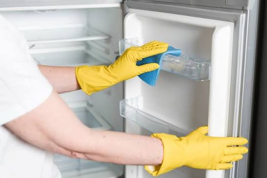
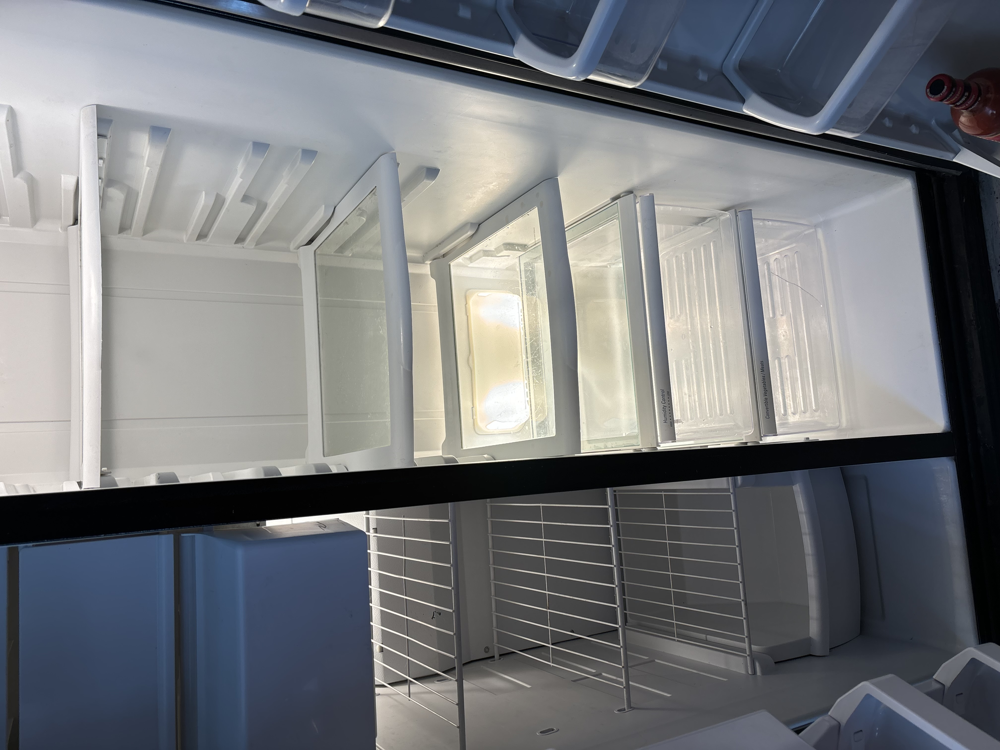

Fridge Cleaning Experts
Bring Your Fridge Back to Life
We deep-clean, sanitize, and restore your fridge to a fresh, hygienic state.

Refreshing Your Fridge...
We deep-clean, sanitize, and restore your fridge to a fresh, hygienic state.
We provide a complete deep clean of your refrigerator, including all shelves and drawers, as well as the freezer and fresh food sections. Everything is treated with antibacterial products to ensure a safe and hygienic environment and to eliminate odors. A clean refrigerator is the key to better health and longevity.
We clean dust from the condenser coils and clear the drain system to keep your refrigerator running efficiently. Clean coils are essential for the health, performance, and longevity of your refrigerator.
We thoroughly clean the outside of your refrigerator and apply a protective coating to keep it looking fresh and well-maintained.
A clean filter ensures fresh, pure water and ice in your refrigerator. Filter replacement is included in the service, while the cost of the filter itself is charged separately.




Email: fridgecleaningexperts@gmail.com
Phone: +1(424)279-0744